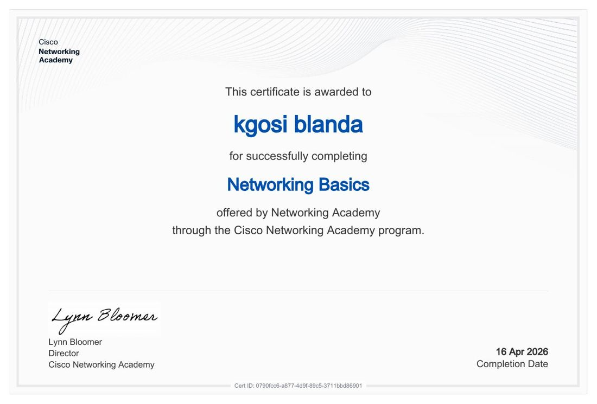
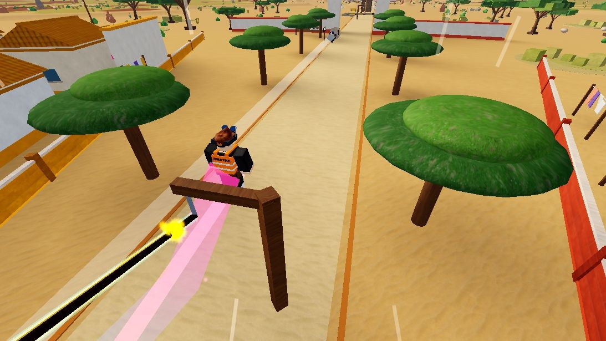
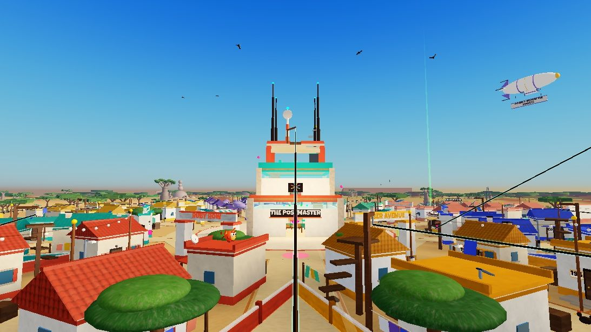
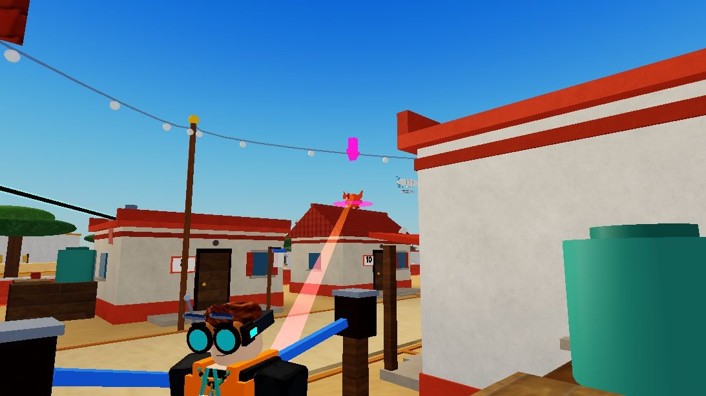
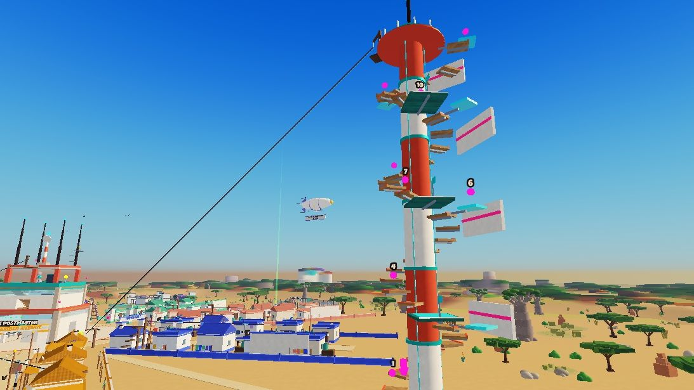
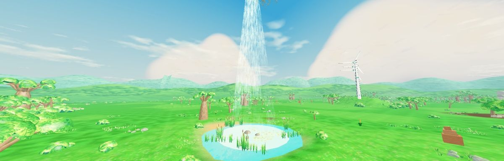

Skills and Projects
The skills I use and am developing, and the projects I build in my own time. Full certificates are on the Certificates page.
Skills
1. Networking (Cisco and RUCKUS)
What: How networks are built, addressed and connected, through Cisco Networking Academy courses, RUCKUS routing and switching training and Cisco Black Belt partner training.
Evidence: Cisco NetAcad Networking Basics, Getting Started with Cisco Packet Tracer, RUCKUS RSP 100 Routing and Switching Protocols, Cisco Black Belt Switching Support Stage 2, and my ongoing CCNA studies.



Impact: I can plan IP addressing for a small network and build and test simple networks in Cisco Packet Tracer. It also helps me understand the networking equipment I deal with in IT procurement.
2. Network Security (Fortinet NSE 1-3)
What: Security fundamentals through the Fortinet Training Institute: the threat landscape, how attacks work, and the technologies used to defend networks, such as firewalls.
Evidence: Fortinet NSE 1, 2 and 3 Certified in Cybersecurity (October 2026), Cisco NetAcad Introduction to Cybersecurity, and participation in Cyberlympics Botswana 2026.


Impact: I now look at networks from a defensive point of view: not only whether they work, but how they are protected. This is the base for my cybersecurity project, Astartis.
3. Web Development (this portfolio)
What: I built this portfolio with HTML and a shared CSS stylesheet and published it with GitHub Pages.
Evidence: This website and its source code on GitHub.
Impact: I learned how pages link together, how one stylesheet controls the look of a whole site, and how to deploy and troubleshoot a live site. When my first upload was renamed to index (1).html and the site would not load, I found and fixed the problem.
Projects
Astartis: AI-assisted security operations platform

What: Astartis is an offline security operations centre (SOC) platform for Windows. It watches network traffic, system events and files, runs a team of specialised AI security agents on local IBM Granite models, and takes protective action such as blocking traffic at the firewall or quarantining files. Every action is recorded in a tamper-evident audit log, and any action that cannot be undone needs approval from several people first, so humans stay in control.
How I built it: I designed the architecture and built it with AI coding assistants, mainly IBM Bob, in C++ with an Elixir/Phoenix dashboard. I entered it in the IBM AI Builders Challenge (Wildcard track).
Evidence: Astartis on GitHub.
Impact: It taught me how real security systems are put together: detection, decision-making, response and auditing, and why the dangerous actions need human checks.
Packet Plains: a Roblox parkour game (in development)
What: Packet Plains is a Roblox game where players are field technicians fixing a sunny, solarpunk village by parkouring, ziplining and chasing gremlins. Real networking ideas are hidden in the gameplay, for example houses as addresses on a network, so players learn without it feeling like a lesson.
How I am building it: In Roblox Studio with Luau code and Blender for 3D models, with AI assistance for coding. I am using the project to learn to code.






Impact: This project is teaching me game design, programming in Luau, 3D modelling and how to plan a large project in stages.